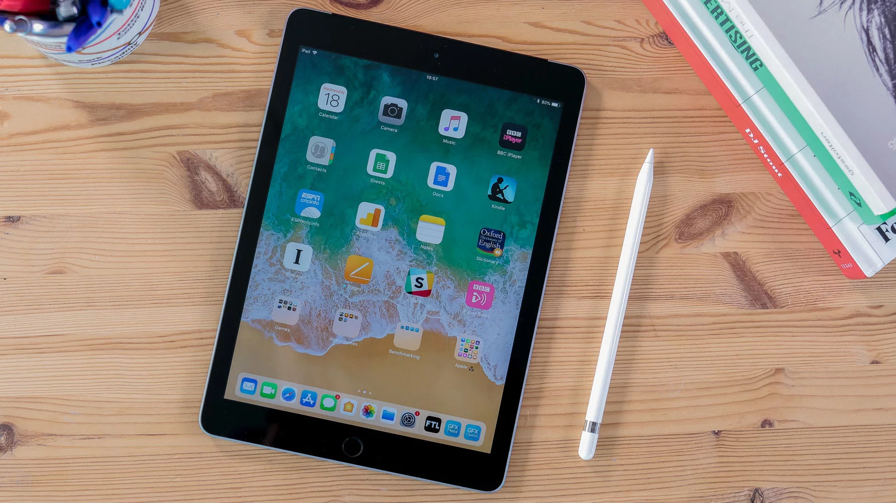

If the computer were invented today, what would it look like? It would be powerful enough for any task. So mobile you could take it everywhere. And so intuitive you could use it any way you wanted — with touch, a keyboard, or even a pencil.1 In other words, it wouldn’t really be a “computer.” It would be the new iPad.
Power for what you do today. And what you’ll discover tomorrow.
A10 Fusion chip. Engineered for performance.
64-bit architecture. Four-core design. Over 3.3 billion transistors. Translation: iPad is incredibly fast. Which comes in handy when you want to edit a 4K video, play graphics-intensive games, or experience the latest augmented reality apps.

It multitasks easily. So you can, too.
iPad packs enough power to use multiple apps all at once. Work on your business plan while doing research on the web while making a FaceTime call to a colleague at the same time. It’s even easier than it sounds.
The most immersive way to experience augmented reality.
Augmented reality (AR) is a new technology that brings virtual objects into the real world. And every aspect of iPad — from the display to the processing power to the motion sensors — is designed to make AR apps more magical than before.